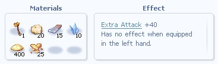
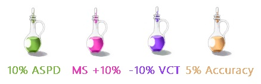

Monk/Champion Throw Spirit Sphere Guide
Summary

This build focuses on using Throw Spirit Sphere (TSS), a ranged attack that consumes 1 sphere.
For this build, we are going to be focusing on stacking STR since we are going to be using Furious Spirits.
Role

In this build, we are going to be using MAINLY the Exterminator Shooter Role, since TSS is a ranged attack skill.

Although we use TSS for the most part, Lotus Pulse is still very useful in this build, so we are going to be using Exterminator Brawler as our secondary role.
Attributes (Stats)

The priority for the TSS build is maximizing damage output from Spirit Spheres, which means a heavy investment in the stats that scale the skill damage.
- STR: It is the most important stat, which increases attack by a lot and is included in the formula of the skill, which in Furious State scales with STR also.
- DEX: Second most important stat for this build. It greatly reduces cast time, and Hit is a BIG problem for us against Mini-Bosses and MVPs.
- INT: Third most important stat for this build. It helps reducing cast time, and boosts our Max SP and SP Regeneration for sustain.
- Agi: Is an important stat for this build. It helps reducing animation and spam, reducing Delay After Attack.
- VIT: Is dependent on the user of the build. It helps increasing HP and Soft Defense, making farming and surviving a little bit easier.
Recommended stats:
- STR: 9x-100
- AGI: 4x-5x
- VIT: 1-3x
- INT: 3x-4x
- DEX: 7x-8x
- LUK: 1-filler
- (You can always adapt to what you prefer or are going to use this build for)
Skill Tree

This is what I use, feel free to adjust to your needs.
What to MAX?/OBRIGATORY
- Throw Spirit Sphere (TSS): The heart of the build. Max first.
- Call Spirit Sphere: Max this to quickly refill your spheres.
- Furious Spirits: GREATLY boosts our damage, and makes TSS scales with STR (even more).
Utility Skills:
- Blessing: Great for reducing Cast Time and giving us Hit.
- Increase Agility: Reduces Walk Delay and DAA.
- Holy Light: It gives us a buff from the legacy skill Holy Enlightenment, adding 20% Extra damage as Holy.
- Heal: Sustain, makes farming easier.
- Angelus: Big boost in Vit, Max HP, and Soft Def.
- Lotus Pulse: Great for farming.
- Falling Blossom: Passively gives us 5% Dodge, slightly boosting our survival.
- Calm Spirits: Good for when you need to farm in places that die fast and you don't want to worry about taking damage.
- Spiritual Cadence: Useful for a little sustain. You can use Calm Spirits into Spiritual Cadence for a quick SP/HP Recovery.
- Body Relocation: One word: Mobility.
Legacy Skills
Recommended Legacy Skills:

This is going to give you a really nice boost of Holy damage for 100 seconds.

Great for reducing SP consumption.
Up to preference

I use this but it is nowhere near an obvious call. You can pick the legacy that fits the most the content you are doing or how you are playing.
Star Alignment

The Alignment System is going to be of great help in our build. It will boost our Damage, help us reach the ideal Hit, and boost our Cast Speed.
Twinkling Star

The recommended choice for this build is Omni Strength.
Big Stars

We are mostly going to be using Hit %. Since it is a big struggle in our build, remember here are some recommended choices for big stars:
- Hit %: STRONGLY RECOMMENDED for increasing our Hit, which is a big problem for us.
- Ignore DEF Rate(%): Great for increasing Damage against Mini-Bosses and MVPs.
- Ignore DEF Flat: Great for increasing Damage against most normal, rare, and elite monsters.
- Variable Cast Time (Flat): Not super recommended to use this here, but if you really need that extra bump in VCT, you are free to use it.
- Fixed Cast Time (Flat): Not super recommended to use this here, but if you really need that extra bump in FCT, you are free to use it.
Small Stars

We are mostly going to be using Ignore Def. Since it is a big struggle in our build, remember here are some recommended choices for small stars:
- Ignore DEF Rate(%): Great for increasing Damage against Mini-Bosses and MVPs.
- Ignore DEF Flat: Great for increasing Damage against most normal, rare, and elite monsters.
- Variable Cast Time (Flat): Not super recommended to use this here, but if you really need that extra bump in VCT, you are free to use it.
- Fixed Cast Time (Flat): Not super recommended to use this here, but if you really need that extra bump in FCT, you are free to use it.
Equipment

This is what I use, but don't let it get your attention; this is not NEARLY an optimized setup for us.
I'll try to put gear progression in order for each slot:
Headgear
Upper:


Middle:


Lower:


Armor:


Weapon:


Shield:


Garment:


Shoes:


Accessory:


Singularities

Singularities are a big part of our build, and we have some very interesting options. Let's get to what is recommended.
Weapon

Here are the recommended singularities for the Weapon, in order:
- Fixed Cast Time Flat (you only need 1 for IC)
- Physical Attack Power
- Delay After Attack
- P. Dmg vs. Boss Enemy
- Pierces % Def of Boss Enemy
Armor

Here are the recommended singularities for the Armor, in order:
- Max HP Flat
- Max HP %
- Hard Def
- STR
- Melee Resist %
- Soft Def
Garment

Here are the recommended singularities for the Garment, in order:
- Damage Rebounce % (what a surprise)
- STR
- Hard Mdef
- Negative Status Resist
Shoes

Here are the recommended singularities for the Shoes, in order:
- Recover % of Max SP every 10s
- Walk Delay -%
- Damage Rebounce % (what a surprise)
- Spell Point Recovery %
- STR
- Max SP +%
- Max SP Flat
Cards

Cards are a major part of our build. Remember, you can just toss 5% extra elemental cards everywhere if you just want more damage.
I'll try to put gear progression in order for each card slot:
Headgear

or
Any 5% Extra Elemental Damage Card
Armor:


or
Any 5% Extra Elemental Damage Card
Weapon:


Shield:

or
Any 5% Extra Elemental Damage Card
Garment:


or
Any 5% Extra Elemental Damage Card
Shoes:


or
Any 5% Extra Elemental Damage Card
Accessory:

or
Any 5% Extra Elemental Damage Card
Sortilege Enchantment
Sortileges are enchantments that we put on the headgear that can further improve our power level.
Here are the Sortilege Enchantments that are recommended for this build:
- Fixed Cast Time -0.1s
- Physical Attack Power +5%
Reforge
Reforge is a service provided by Whitesmiths to give our weapons especial enchantments.
Here are the Reforges that are recommended for this build:
Attack Reinforce II
+40 Extra Attack. Really good for first reforge if your weapon is not +12
If your weapon is +12 or more
Strength Core
Gives you +21 STR or MORE

Consumables
Consumables are essential to our build. They are going to boost some stats significantly, allowing us to hit faster and stronger.
Here are the consumables that are recommended for this build:
Potions:
Awakening - Sprinting - Channeling - Concentration